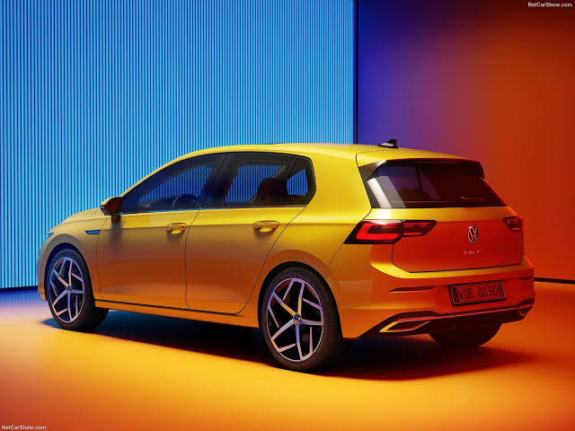

A Volkswagen é uma das marcas mais conhecidas do setor automotivo. Ao longo de sua história, produziu modelos que se tornaram populares em diversos países.
Entre seus veículos estão modelos compactos, sedãs, SUVs e veículos comerciais.
Conheça a história e alguns dos principais modelos da Volkswagen.
A Volkswagen é uma das marcas mais conhecidas do setor automotivo. Ao longo de sua história, produziu modelos que se tornaram populares em diversos países.
Entre seus veículos estão modelos compactos, sedãs, SUVs e veículos comerciais.
O Volkswagen Golf é um dos modelos mais conhecidos da marca. O veículo passou por diferentes gerações ao longo dos anos, recebendo mudanças em seu design, motores e tecnologias.
